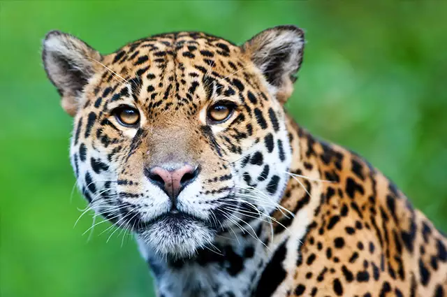
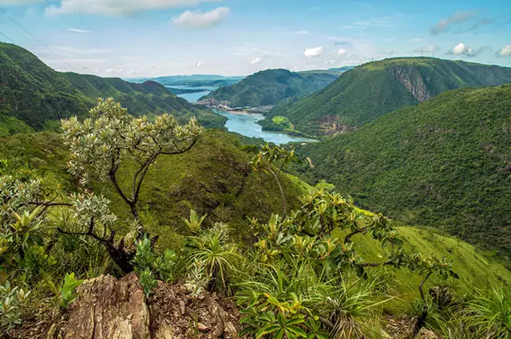
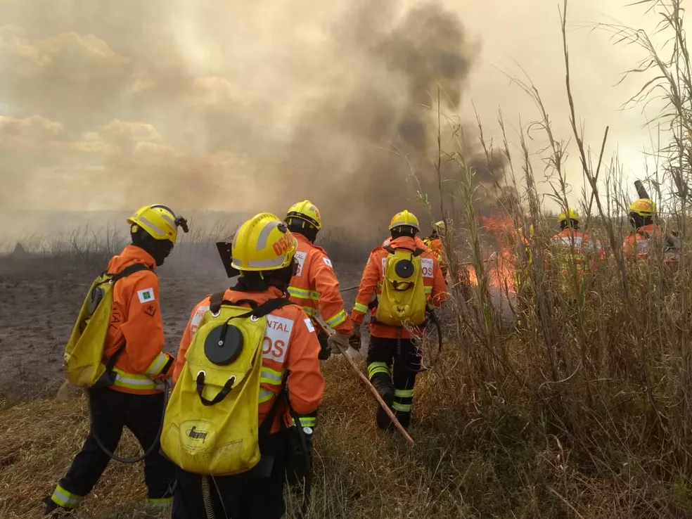

Animais do Cerrado
Você sabe quais são os animais do Cerrado? Antes de mais nada, quando paramos para analisar os animais do mundo, logo percebemos que não existe homogeneidade na distribuição destes. Animais que existem em um dado local da superfície terrestre, não existem em outros pontos.
A existência de espécies animais está relacionada com vários fatores, como o relevo, o clima e a vegetação dos lugares no mundo. Em ambientes rigorosos, como é o caso das regiões polares e dos desertos, os animais precisam ter adaptações em seus corpos para suportar as condições do ambiente.
Todos os biomas terrestres apresentam biodiversidade, em maior ou menor escala, dependendo de suas características. Existem também nos biomas as espécies chamadas de endêmicas, que são aquelas que só existem naquele local em específico. Para conhecer mais sobre a fauna do bioma Cerrado, confira o artigo abaixo!
Animais típicos do Cerrado
O Cerrado é um bioma bastante rico em relação a sua fauna, ou seja, quanto aos animais que vivem neste habitat. São comuns mamíferos, aves, répteis, anfíbios e peixes. A alta diversidade de espécies de animais no Cerrado está relacionada também com a posição geográfica do bioma em relação aos demais biomas brasileiros.
O Cerrado fica numa área que funciona como um elo com outros biomas como a Amazônia, a Mata Atlântica, o Pantanal e a Caatinga. Por isso, os animais que se deslocam entre estes biomas, passarão pelo Cerrado. São alguns animais típicos do Cerrado brasileiro:
- Anta
- Cervo
- Onça-pintada
- Cachorro-vinagre
- Lobo-guará
- Lontra
- Tamanduá-bandeira
- Gambá
- Gato-palheiro
- Veado-mateiro
- Gato-maracajá
- Quati
- Preá
- Capivara
Há uma dinâmica entre os animais que habitam a região, os quais podem migrar de um bioma até os demais, usando o Cerrado como local de transição. Com isso, se torna mais difícil definir quais animais efetivamente são do Cerrado, e quais buscam esta região apenas para deslocamento, ou ainda, quais apenas caçam no Cerrado.
O que é certo é que o Cerrado é uma região bastante dinamizada pela presença destes animais, formando um ecossistema complexo.
Animais em extinção no Cerrado
Segundo Ministério do Meio Ambiente do Brasil, acredita-se que inúmeras espécies de plantas e animais do Cerrado estejam correndo risco de extinção. Há uma possibilidade de que cerca de 20% das espécies nativas e endêmicas da região já não ocorram em áreas protegidas, e que pelo menos 137 espécies de animais que ocorrem no bioma do Cerrado estão ameaçadas de extinção.
Dentre os biomas brasileiros, o que mais sofreu com a intervenção humana foi a Mata Atlântica, e seguido desta está o bioma do Cerrado.
O Cerrado tem sofrido principalmente com o desmatamento ocasionado para ocupação agropecuária. Ou seja, áreas que antes abrigavam vegetação nativa e habitats de vários animais, agora se transformam em pastagens para criação de gado. Ou ainda, extensas áreas com plantação de monocultura, geralmente de soja ou milho.
ㅤㅤㅤㅤㅤㅤㅤㅤㅤㅤㅤㅤㅤA onça-pintada é uma das 137 espécies ameaçadas de extinção
A perda de biodiversidade do Cerrado é um dado muito triste, já que várias espécies que ocorrem apenas neste bioma, estão sendo extintas dentre os animais existentes.
Além extensa biodiversidade que o Cerrado abriga, o bioma ainda presta importantes serviços ecológicos para o Brasil, especialmente com o abastecimento de água. É na região Centro-Oeste do Brasil (onde está cerca da metade da área do cerrado) onde nascem as principais bacias hidrográficas do país.
Ou seja, o Cerrado pode ser considerado como o “Berço das Águas” brasileiro. O problema é que com a perda da vegetação, os cursos de água também sofrem, podendo reduzir sua capacidade hidrológica. Além disso, o uso massivo de produtos químicos na agropecuária (fertilizantes, agrotóxicos), tem causado a contaminação dos animais e dos rios da região.
Vários animais do Cerrado já foram extintos ou estão em risco de extinção, como é o caso de alguns abaixo:
- Ariranha (Pteronura brasiliensis)
- Anta (Tapirus terrestris)
- Gato Maracajá (Leopardus wiedii)
- Jaguatirica (Leopardus pardalis)
- Tamanduá Bandeira (Myrmecophaga tridactyla)
- Lobo-Guará (Chrysocyon brachyurus)
- Onça Pintada (Panthera onca)
Os animais do Cerrado são afetados por vários problemas que afetam a região, desde a contaminação dos solos e dos rios pelo uso de produtos na agropecuária, até o desmatamento e consequente perda de habitats de espécies.
Quando uma espécie perde seu habitat, ou entra em extinção, há um impacto em várias outras espécies da fauna que dependiam desta. Com a expansão da fronteira agrícola brasileira, tem-se visto a substituição do bioma do Cerrado pelas grandes pastagens artificiais, ou ainda pelas enormes extensões produtoras de grãos, espaços criados pelos homens para suprir suas necessidades produtivas.
O que é o Cerrado?
Os biomas são conjuntos de diferentes ecossistemas existentes num dado local, onde há predominância de um determinado tipo de vegetação. O Cerrado é um dos biomas existentes no Brasil, juntamente com os biomas da Amazônia, Mata Atlântica, Caatinga, Pampa e Pantanal.
O Cerrado é conhecido como a “Savana brasileira”, por suas características similares as do bioma das Savanas, existente em outras partes do mundo. Durante bastante tempo, acreditou-se que o bioma do Cerrado era pobre em espécies de fauna e flora, por isso, deu-se pouca importância para ele.
ㅤㅤㅤㅤㅤㅤㅤㅤㅤㅤO Parque Nacional Serra Canastra abriga vegetação característica do Cerrado
Hoje já se sabe da riqueza de espécies que existem na região do Cerrado, muitas das quais próprias desta região (endêmicas). O Cerrado corresponde a cerca de 24% das áreas do Brasil, e acontece nas regiões Centro-Oeste, Norte e Nordeste do Brasil, ocupando a posição de segundo maior bioma do território brasileiro.
Em relação a vegetação, os Cerrados podem apresentar ambientes com predominância de extensões com campos limpos, mas também ambientes com formação arbórea mais densa. São comuns árvores retorcidas e gramíneas, as quais podem se formar em dois estratos de vegetação.
Fatores Contribuintes
O desmatamento é um dos maiores contribuidores para a extinção na região, atualmente, o bioma mais ameaçado pelo desmatamento no Brasil em proporção territorial, uma vez que a Amazônia tem o dobro do seu tamanho. Segundo o balanço mais recente divulgado em dezembro pelo Inpe, o desmatamento no Cerrado aumentou 7,9% entre agosto de 2020 e julho de 2021.
Dados revelam que menos de 48% da vegetação original encontra-se total ou parcialmente conservada, e, para piorar, o desmatamento vem aumentando em grande medida nos últimos anos, sendo maior até mesmo que o da Amazônia.
"As principais causas da devastação do Cerrado são o avanço das queimadas e a retirada de suas matas para a utilização do solo na agropecuária. A área de sua ocupação original configura-se, hoje, como o principal local fornecedor de grãos do Brasil, com destaque para a soja, que é voltada, principalmente, para o mercado externo. Tal processo ocorreu graças aos avanços dos sistemas de cultivo, que permitiram a instalação de lavouras em locais antes considerados pouco propícios, pois os solos do Cerrado são muito ácidos e apenas a aplicação da calagem (correção do pH do solo através da adição de calcário) pode corrigir essa dificuldade.
ㅤㅤㅤㅤㅤㅤㅤㅤㅤㅤㅤㅤㅤㅤㅤㅤBombeiros entram em área de Cerrado para combater fogo